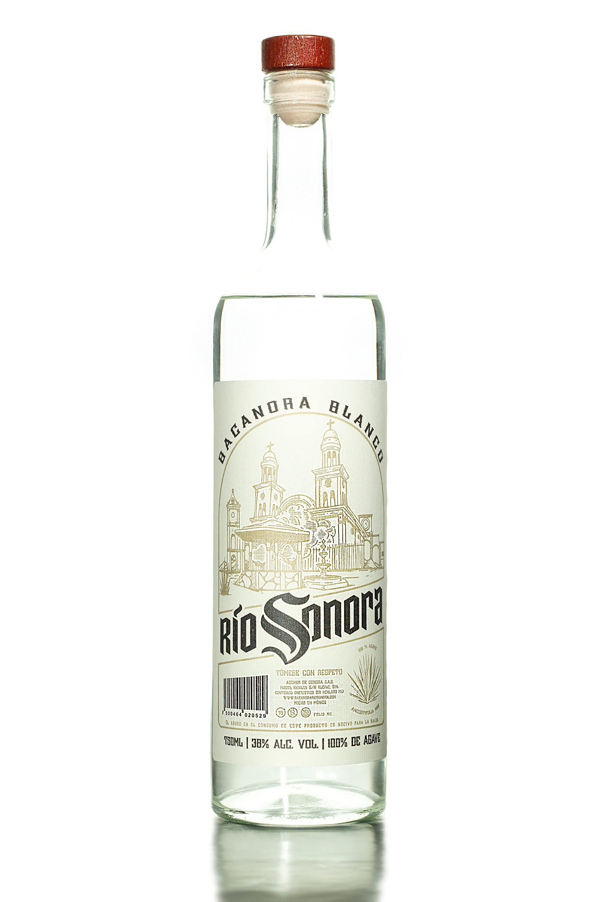

¿Qué es el Bacanora?
El Bacanora es una bebida alcohólica tradicional de Sonora, México, elaborada a partir de la fermentación y destilación del agave Pacifica. Es una Denominación de Origen protegida que resalta la identidad cultural de la región.
El Proceso Artesanal
- Corte del agave: Se seleccionan las piñas maduras.
- Cocción: Las piñas se cocinan en hornos subterráneos.
- Fermentación: Se transforma el azúcar en alcohol.
- Destilación: Proceso que da pureza al Bacanora.
Datos Curiosos
- El Bacanora fue ilegal durante casi 77 años en México.
- Solo se produce en 35 municipios de Sonora.
- Se le conoce como el "tequila sonorense".